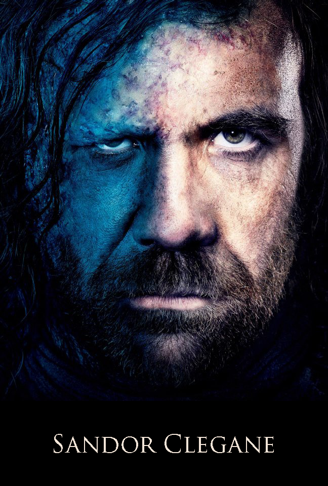

|

|
Sandor Clegane
Sandor Clegane is a member of House Clegane. He is the younger brother of the current head, Ser Gregor Clegane. He is nicknamed "The Hound" for his savage nature and unquestioning obedience to his masters and for the three dogs featured in his family's crest. He is considered one of the most dangerous fighters in Westeros, though he frequently drinks himself into stupors. As a child, Sandor received gruesome facial burns when Gregor shoved his face into a brazier.[1] He came to loathe fire, his brother, and the hypocrisy of knighthood in general.
Appearance
Sandor is a huge and heavily-muscled man. The right side of his face is gaunt, sharp cheekbones and heavy brow. His nose is large and hooked, and his hair is dark and thin worn long and brushed so that it cover the left side since no hair grew there. The left side of his face is a ruin with no ear but a hole. There is a twisted mass of scar around his good left eye. Slick black flesh is pocked with craters and deep cracks that ooze red and wet. His eyes are grey. On his jaw, bone shows.[1] He regularly wears plain armor and a distinctive helm sculpted into the shape of a snarling dog's head.
History
Sandor's childhood appears to have been overshadowed by his older brother Gregor's brutality and martial prowess. Aged seven, his father explained the burns inflicted by Gregor by claiming his bedding caught fire. There are rumours of a sister who died young in mysterious circumstances, and their father was killed in a hunting accident shortly after King Robert came to the throne, which is also implied to have been suspicious, leaving the family estates to Gregor.
Sandor left to join the Lannister household the same day Gregor came into his inheritance. He claims to have killed a man when he was twelve years old, presumably during Robert's Rebellion.
|